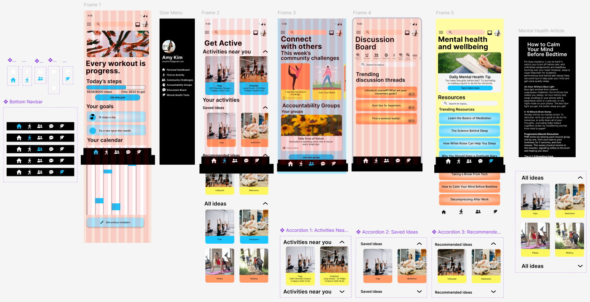
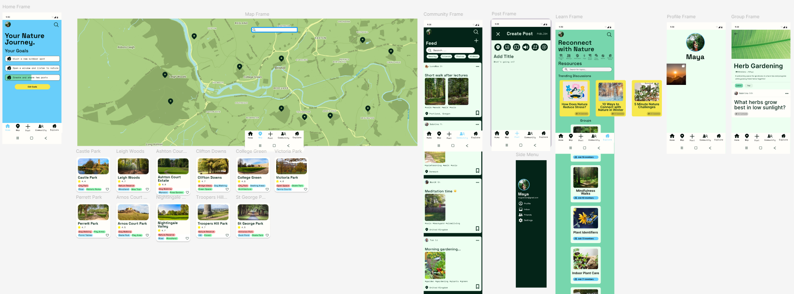

Work

MoveTogether: A UX/UI Process
A mobile app concept to encourage students to be more physically active — from user research to Figma prototype.
Immersion in Games: An Experimental Study
A study involving multiple participants, collection of qualitative and quantitative data, and statistical testing.

NatureBuddy: A UX/UI Process
A mobile app concept to encourage young people to connect with nature - from user research to Figma prototype.